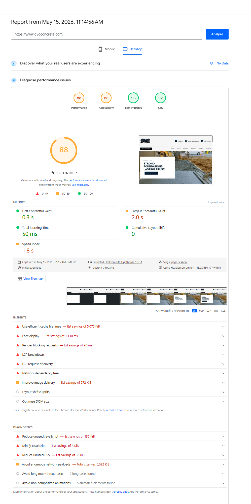
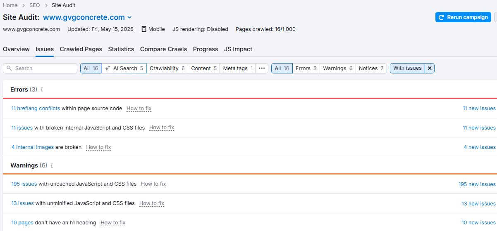

0 Executive Summary
Top 3 Critical Issues
| CRITICAL | GBP Category Wrong & Zero Reviews — Listed as "Construction company" instead of "Concrete contractor." Combined with 0 reviews, GVG is invisible in the Google Maps local pack for ALL 9 keywords tested. Competitors have 5-26 reviews and the correct category. |
| CRITICAL | Phone Number Mismatch (NAP Inconsistency) — GBP lists (559) 556-1484 but the website shows (559) 723-7481. This signals to Google that the business information is unreliable and directly suppresses local pack eligibility. |
| CRITICAL | No Schema Markup & Minimal Website Structure — Zero structured data (no LocalBusiness schema), only 6 pages total with no individual service pages, no location pages, and no blog. The site cannot compete for long-tail keywords. |
The Big Picture
GVG Concrete has a solid organic presence — ranking in positions 2-5 for most Tulare concrete keywords. However, the business is completely invisible on Google Maps, which is where 46% of all Google searches have local intent. The root causes are a misconfigured Google Business Profile (wrong category, wrong phone, zero reviews) and a thin website with no schema markup. Fixing these issues could dramatically increase lead generation within 60-90 days.
1 Google Maps / Local Pack Rankings
Local Pack Results — 9 Keywords Tested
GVG Concrete does NOT appear in the local pack for ANY keyword tested.
| Keyword | GVG Local Pack | GVG Organic | Local Pack #1 | Local Pack #2 | Local Pack #3 |
|---|---|---|---|---|---|
| concrete contractor tulare ca | Not Showing | #3 | VRG Concrete (4.8★ / 26) | Bully Concrete (5.0★ / 16) | Ontiveros Concrete (5.0★ / 5) |
| stamped concrete tulare ca | Not Showing | #4 | Conquered Concrete (4.4★ / 15) | Ontiveros Concrete (5.0★ / 5) | Visalia Concrete & Stamp (4.9★ / 15) |
| concrete driveway tulare ca | Not Showing | #5 | VRG Concrete (4.8★ / 26) | Bully Concrete (5.0★ / 16) | Conquered Concrete (4.4★ / 15) |
| foundation contractor tulare ca | Not Showing | #4 | Bully Concrete (5.0★ / 16) | VRG Concrete (4.8★ / 26) | Conquered Concrete (4.4★ / 15) |
| retaining wall contractor tulare ca | Not Showing | Not in Top 9 | Bully Concrete (5.0★ / 16) | Conquered Concrete (4.4★ / 15) | LOBOS Landscaping (5.0★ / 2) |
| concrete patio tulare ca | Not Showing | #3 | VRG Concrete (4.8★ / 26) | Bully Concrete (5.0★ / 16) | Ontiveros Concrete (5.0★ / 5) |
| concrete contractor visalia ca | Not Showing | Not in Top 9 | Visalia Concrete & Stamp (4.9★ / 15) | Spectrum Concrete (4.9★ / 29) | FASTER CONCRETE (5.0★ / 21) |
| concrete repair tulare ca | Not Showing | #2 | Bully Concrete (5.0★ / 16) | Conquered Concrete (4.4★ / 15) | Ontiveros Concrete (5.0★ / 5) |
| concrete contractor near me | Not Showing | Not in Top 9 | VRG Concrete (4.8★ / 26) | Bully Concrete (5.0★ / 16) | Conquered Concrete (4.4★ / 15) |
Key Insight: Organic Rankings vs Local Pack
GVG ranks organically in positions 2-5 for 6 out of 9 keywords — this proves the website has decent authority and relevance. The fact that GVG ranks organically but never in the local pack definitively points to Google Business Profile issues, not website issues, as the primary blocker.

2 Google Business Profile Audit
GBP Listing Found
One listing found. No duplicate listings detected (searched by business name and both phone numbers).
GVG Concrete (Client)
| Business Name | GVG concrete lowercase |
| Primary Category | Construction company WRONG |
| Secondary Categories | None MISSING |
| Reviews | 0 reviews ZERO |
| Rating | No rating |
| Address | 950 Alderwood St, Tulare, CA 93274 |
| Phone | (559) 556-1484 MISMATCH |
| Website Phone | (559) 723-7481 |
| Hours | Opens 7 AM Website says 8 AM |
| Website | gvgconcrete.com |
| Business Description | None MISSING |
| Services Section | Not configured MISSING |
| Google Posts | None MISSING |
| Photos | A few work photos present |
| Owner Responds to Reviews | N/A (no reviews) |
VRG Concrete (#1 Competitor)
| Business Name | VRG Concrete Construction Proper |
| Primary Category | Concrete contractor CORRECT |
| Reviews | 26 reviews Active |
| Rating | 4.8 / 5.0 |
| Address | 2793 Lakeridge Ave, Tulare, CA 93274 |
| Phone | (559) 679-7680 |
| Hours | Opens 8 AM |
| Website | vrgconcrete.com |
| Reviews Tab | Dedicated reviews tab visible |
| Photos | Active photo gallery |
Why GVG Is Invisible on Google Maps
- Wrong Primary Category: "Construction company" is a generic parent category. Google prioritizes listings with exact-match categories like "Concrete contractor" when users search for concrete services.
- Zero Reviews: Google's algorithm heavily weights review count and velocity. Competitors with 5+ reviews will always outrank a zero-review listing.
- Phone Number Mismatch: The GBP phone (559-556-1484) differs from the website (559-723-7481). This NAP inconsistency signals untrustworthiness to Google.
- No Business Description: Missing description means fewer keyword signals for Google to match queries.
- No Services Configured: The GBP services section is empty, providing zero category signals.
- No Google Posts: Inactive profile signals an unmanaged business.

3 Website Technical SEO
Schema Markup Analysis
GVG Concrete — Schema
- LocalBusiness Schema: MISSING
- Organization Schema: MISSING
- Service Schema: MISSING
- FAQ Schema: MISSING
- BreadcrumbList Schema: MISSING
- Review/AggregateRating: MISSING
Zero structured data markup found on any page.
Industry Best Practice
- LocalBusiness with full NAP + geo coords
- Service schema for each service offered
- FAQ schema on service pages
- BreadcrumbList for site navigation
- AggregateRating with review data
- OpeningHoursSpecification
On-Page SEO Audit
| Element | Homepage | Services Page | Status |
|---|---|---|---|
| Title Tag | GVG Concrete — Tulare Concrete Contractors | GVG Concrete Services — Foundations, Patios, Driveways & More | Good |
| Meta Description | Not found in page source | Not found in page source | Missing |
| H1 Tag | Built on skill, delivered with care — welcome to better concrete. | Built to Last — Expert Concrete Services for Homes and Businesses | Weak — no keywords |
| Content Depth | ~1,200 words | ~1,200 words | Thin |
| Image Alt Text | "contractor", "Ilustrattion shape 1" | "Foundations", "Stamped Concrete", etc. | Basic |
| Internal Linking | 6 main nav links + service anchors | Anchor links to service sections | Minimal |
| Breadcrumbs | Not visible | Home / Services | Present on subpages |
| FAQ Section | None | None | Missing |
| Map Embed | None | None | Missing |
| Canonical Tags | Not found | Not found | Missing |
Site Structure & Indexation
| Metric | Value | Status |
|---|---|---|
| Total Pages in Sitemap | 6 unique URLs | Very thin site |
| Pages Indexed (Google) | 4 pages | 2 pages not indexed |
| Pages Crawled (SEMrush) | 16 pages | Includes sub-resources |
| Individual Service Pages | 0 — all on one page | Major gap |
| Location / Area Pages | 0 | Major gap |
| Blog Posts | 0 | No content strategy |
| robots.txt | Minimal — no directives or sitemap ref | Needs update |
| Sitemap in robots.txt | Not referenced | Missing |
| HTTPS | Yes — site loads on HTTPS | Good |
| Hreflang Tags | Present but conflicting (SEMrush error) | 11 conflicts |
3A Page Performance & Core Web Vitals
Lighthouse Scores (Desktop)
Source: PageSpeed Insights — Captured May 15, 2026. No real user (CrUX) data available.
Core Web Vitals (Lab Data)
| Metric | Value | Threshold | Status |
|---|---|---|---|
| First Contentful Paint (FCP) | 0.3s | < 1.8s | Good |
| Largest Contentful Paint (LCP) | 2.0s | < 2.5s | Needs Improvement |
| Total Blocking Time (TBT) | 50ms | < 200ms | Good |
| Cumulative Layout Shift (CLS) | 0 | < 0.1 | Good |
| Speed Index | 1.8s | < 3.4s | Moderate |
Performance Opportunities
| Issue | Potential Savings | Priority |
|---|---|---|
| Use efficient cache lifetimes | 5,075 KiB | High |
| Font display optimization | 1,130 ms | High |
| Improve image delivery | 272 KiB | Medium |
| Reduce unused JavaScript | 136 KiB | Medium |
| Reduce unused CSS | 33 KiB | Low |
| Render blocking requests | 90 ms | Low |
| Enormous network payloads | Total: 5,092 KiB | Medium |

3B Technical Site Audit (SEMrush)
Errors (Critical)
| Issue | Affected | Impact |
|---|---|---|
| Hreflang conflicts within page source code | 11 issues | High — Confuses search engines about language/region targeting |
| Broken internal JavaScript and CSS files | 11 issues | High — Affects rendering and functionality |
| Broken internal images | 4 issues | Medium — Missing images harm user experience |
Warnings
| Issue | Affected | Impact |
|---|---|---|
| Uncached JavaScript and CSS files | 195 issues | Medium — Slows repeat visits significantly |
| Unminified JavaScript and CSS files | 13 issues | Medium — Larger file sizes than necessary |
| Pages without H1 heading | 10 pages | Medium — Missing primary heading hurts SEO signals |

4 Citation Consistency
Canonical NAP (Reference)
| Business Name | GVG Concrete |
| Address | 950 Alderwood St, Tulare, CA 93274 |
| GBP Phone | (559) 556-1484 |
| Website Phone | (559) 723-7481 |
| Website | https://www.gvgconcrete.com |
WARNING: Two different phone numbers in use. This is a fundamental NAP problem that must be resolved before citation building.
Citation Audit Results
| Source | Found? | Name | Address | Phone | Website | Status |
|---|---|---|---|---|---|---|
| Google GBP | Yes | GVG concrete | Match | 559-556-1484 | Match | Issues |
| BBB | Yes | GVG Concrete | Match | 559-723-7481 | Not listed | Partial — not accredited, no website |
| Partial | — | — | 559-723-7481 (in posts) | — | No Business Page — posts in groups only | |
| Bing Places | Partial | Match | — | — | — | Minimal data extractable |
| Nextdoor | Partial | GVG Concrete Services | Visalia (wrong city!) | — | — | Wrong city, wrong name |
| Craigslist | Partial | (GVG. Concrete) | — | BOTH numbers listed | — | Inconsistent name, dual phones |
| Yelp | Not Found | — | — | — | — | Missing — critical gap |
| Yellow Pages | Not Found | — | — | — | — | Missing |
| Apple Maps | Not Found | — | — | — | — | Missing |
| MapQuest | Not Found | — | — | — | — | Missing |
| Angi | Not Found | — | — | — | — | Missing |
| Thumbtack | Not Found | — | — | — | — | Missing |
| Houzz | Not Found | — | — | — | — | Missing |
| Manta | Not Found | — | — | — | — | Missing |
Of 14 citation sources checked, 7 have no listing at all, and the 7 that exist have NAP inconsistencies (wrong phone, wrong name format, wrong city). The dual phone number problem is the most damaging issue: (559) 556-1484 appears on GBP while (559) 723-7481 appears on the website, BBB, and Facebook posts. Additionally, the website does not display the full street address — only "Tulare, CA" — which prevents citation consistency even when directories pull data from the site.
5 Competitor Benchmarking
Tulare-Area Concrete Contractor Competitive Landscape
| Business | GBP Rating | Reviews | Category | Address | Local Pack Appearances (of 9 KWs) | Website |
|---|---|---|---|---|---|---|
| GVG Concrete | No rating | 0 | Construction company | 950 Alderwood St | 0 / 9 | gvgconcrete.com |
| VRG Concrete Construction | 4.8 ★ | 26 | Concrete contractor | 2793 Lakeridge Ave | 5 / 9 | vrgconcrete.com |
| Bully Concrete | 5.0 ★ | 16 | Concrete contractor | 1722 W Bane Ave | 7 / 9 | bullyconcrete.com |
| Conquered Concrete of the Valley | 4.4 ★ | 15 | Concrete contractor | 241 Cumberland St | 6 / 9 | conqueredconcrete.com |
| Ontiveros Concrete | 5.0 ★ | 5 | Concrete contractor | 12555 Colony Ave | 4 / 9 | ontiverosconcrete.com |
| Visalia Concrete & Stamp | 4.9 ★ | 15 | Concrete contractor | Visalia, CA | 2 / 9 | visaliaconcreteandstamp.com |
| tulareconcrete.com | No GBP found | — | — | — | 0 (organic only) | tulareconcrete.com |
| Spectrum Concrete Solutions | 4.9 ★ | 29 | Concrete contractor | Visalia, CA | 1 / 9 | visaliaconcretecontractor.com |
| FASTER CONCRETE INC | 5.0 ★ | 21 | Concrete contractor | Visalia, CA | 1 / 9 | fasterconcreteinc.com |
Competitive Gap Analysis
| Factor | GVG Concrete | Top Competitors | Gap |
|---|---|---|---|
| Google Reviews | 0 | VRG: 26, Bully: 16, Conquered: 15 | Critical — need 15+ reviews |
| GBP Category | Construction company | All use "Concrete contractor" | Wrong category |
| Total Website Pages | 6 | Tulare Concrete: 15+, VRG: 10+ | Thin content |
| Individual Service Pages | 0 — all on one page | Tulare Concrete: 8 pages (~12,000 words total) | 1 ranking URL vs 8+ |
| Schema Markup | None | Tulare Concrete: LocalBusiness + FAQ + Service schemas | No rich result eligibility |
| Service Areas Listed | Tulare only | Ontiveros: 11 cities, Tulare Concrete: 8 cities | Missing geographic reach |
| FAQ Content | None | Tulare Concrete: FAQ with schema markup | Missing rich result opportunity |
| Citation Presence | ~7 partial, 0 consistent | Competitors on 5-10+ directories | Extremely low |
| Blog / Content Marketing | None | None (zero competitors have one!) | First-mover opportunity |
| Portfolio / Projects | 21 projects | Tulare Concrete: 0, others: few | Largest portfolio in market |
| Years in Business | Since 2005 (20+ years) | 3-15 years | Longest track record |
| Licensed & Insured | CSLB 1140188 | Varies | Strong trust signal |
| Named Founder Story | Guillermo Villeda — personal story | Most competitors are faceless | Powerful trust differentiator |
Biggest Competitive Threat
TulareConcrete.com is the most technically sophisticated competitor despite being founded in 2024. They have 8 individual service pages with ~12,000 words total content, LocalBusiness + FAQPage + Service schema markup, and 8 service area cities listed. However, they have zero reviews and zero portfolio content — giving GVG a window to close the technical gap while maintaining a real-world credibility advantage.
VRG Concrete's SSL is currently broken — this creates a temporary opportunity to capture their search traffic if GVG acts quickly on GBP fixes.
Untapped Opportunities
- Blog content: Zero competitors have a blog — first-mover advantage for educational content and long-tail keywords
- Bilingual content: Tulare County is ~65% Hispanic — only Bully Concrete offers any Spanish content. Bilingual pages could capture an underserved market
- Video content: Only Ontiveros has video — project walkthroughs and testimonials would differentiate GVG
- Pricing transparency: Only Tulare Concrete shares price ranges — adding pricing guides builds trust and captures high-intent searches
- Satisfaction guarantee: Visalia Concrete advertises "100% Satisfaction Guaranteed" — GVG could match or exceed this
6 Prioritized Action Plan
CRITICAL — Do This Week
| # | Action | Expected Impact |
|---|---|---|
| 1 | Fix GBP Primary Category — Change from "Construction company" to "Concrete contractor." Add secondary categories: "Concrete work contractor," "Paving contractor," "Foundation contractor." | Enables local pack eligibility for all concrete keywords |
| 2 | Fix Phone Number — Update GBP phone to match website: (559) 723-7481. Or update the website to match GBP. One phone everywhere. | Resolves NAP inconsistency that suppresses rankings |
| 3 | Fix Business Name — Capitalize to "GVG Concrete" to match website branding. | NAP consistency improvement |
| 4 | Fix GBP Hours — Align GBP hours (7 AM) with website hours (8 AM). Pick one and make them match. | NAP consistency improvement |
| 5 | Complete GBP Profile — Add: business description (750 chars max), all services with descriptions, attributes, and at least 10 high-quality photos of recent projects. | Stronger profile signals for Google ranking algorithm |
| 6 | Add Full Address to Website — The website only shows "Tulare, CA" — add the complete address "950 Alderwood St, Tulare, CA 93274" to the footer and contact page. This is essential for NAP consistency. | Enables citation consistency across all platforms |
| 7 | Create a Facebook Business Page — Currently GVG only has group posts, no dedicated page. A business page is required for citations and customer engagement. | Critical citation source + social proof |
| 8 | Fix Nextdoor Listing — Currently shows as "GVG Concrete Services" in Visalia (wrong name, wrong city). Update to correct name and Tulare location. | Fix misdirected local signals |
HIGH PRIORITY — Within 30 Days
| # | Action | Expected Impact |
|---|---|---|
| 9 | Launch Review Campaign — Systematically ask past clients for Google reviews. Target: 5 reviews in first month, 15+ within 90 days. Create a simple review link to share via text/email. | Reviews are the #1 factor for local pack ranking |
| 10 | Add LocalBusiness Schema — Implement JSON-LD structured data on every page: LocalBusiness type, full NAP, geo coordinates, opening hours, services, area served. | Rich results eligibility, stronger local signals |
| 11 | Create Individual Service Pages — Build dedicated pages for: Foundations, Stamped Concrete, Driveways, Patios, Retaining Walls, Concrete Repair, New Construction. Each 800+ words with unique content, FAQs, and photos. | Target long-tail keywords, improve topical authority |
| 12 | Build Core Citations — Create listings on: Yelp, Facebook, BBB, Bing Places, Apple Maps, Yellow Pages, MapQuest, Angi, Thumbtack, Houzz. Ensure identical NAP on every platform. | Citation volume and consistency boost local rankings |
| 13 | Fix Technical Errors — Resolve hreflang conflicts (11), fix broken JS/CSS files (11), fix broken images (4), add missing meta descriptions, add canonical tags. | Improves crawlability and indexation |
| 14 | Update robots.txt — Add sitemap reference and appropriate directives. | Better crawl efficiency |
MEDIUM PRIORITY — 30-60 Days
| # | Action | Expected Impact |
|---|---|---|
| 15 | Create Location / Service Area Pages — Build pages targeting neighboring cities: Visalia, Porterville, Hanford, Dinuba, Exeter. Each with unique content about serving that area. | Expand geographic keyword targeting |
| 16 | Start Google Posts — Post weekly updates: project photos, tips, seasonal offers, team highlights. Keep GBP active and engaging. | Signals active business to Google, improves CTR |
| 17 | Add FAQ Schema — Create FAQ sections on each service page with common questions. Mark up with FAQ schema for rich results. | Featured snippet opportunities, increased SERP real estate |
| 18 | Embed Google Map — Add an embedded Google Map on the contact page and footer showing business location. | Local relevance signal |
| 19 | Performance Optimization — Enable caching (5,075 KiB savings), optimize font loading (1,130ms savings), compress images, minify JS/CSS. | Faster load times, better user experience |
ONGOING — Monthly Activities
- Review Generation: Ask every completed job client for a Google review. Target 2-4 new reviews per month.
- Google Posts: Publish 2-4 posts per month with project photos and updates.
- Content Publishing: Add 1-2 blog posts per month (concrete tips, project spotlights, seasonal maintenance guides).
- Photo Updates: Upload new project photos to GBP monthly.
- Review Responses: Respond to every review within 24 hours (positive and negative).
- Ranking Monitoring: Track local pack and organic positions for target keywords monthly.
- Citation Monitoring: Quarterly audit of all citations to ensure NAP consistency.
7 90-Day Roadmap
Week 1 — GBP Emergency Fixes
Fix category to "Concrete contractor," correct phone number, update hours, capitalize business name, add business description, add services, upload 10+ photos.
Week 2 — Review Campaign Launch
Create Google review shortcut link. Contact 10-15 past clients via text/email requesting reviews. Target: 5 reviews by end of week 2.
Weeks 3-4 — Technical SEO & Schema
Implement LocalBusiness JSON-LD schema on all pages. Fix hreflang conflicts, broken files, missing meta descriptions. Update robots.txt with sitemap reference. Add canonical tags.
Weeks 5-6 — Content Expansion
Build 7 individual service pages (Foundations, Stamped Concrete, Driveways, Patios, Retaining Walls, Concrete Repair, New Construction). Each 800+ words with unique content and photos.
Weeks 7-8 — Citation Building
Create consistent listings on all 10+ citation platforms. Start Google Posts (weekly cadence). Build 3 location/area pages (Visalia, Porterville, Hanford).
Weeks 9-10 — Content & Engagement
Add FAQ sections with schema to service pages. Embed Google Map. Start blog with 2 initial posts. Continue review generation.
Weeks 11-12 — Measure & Optimize
Run ranking checks on all 9 keywords. Compare local pack positions. Audit citation consistency. Adjust strategy based on results.
Success Metrics — Current vs 90-Day Target
| Metric | Current | 30-Day Target | 90-Day Target |
|---|---|---|---|
| Google Reviews | 0 | 5+ | 15+ |
| Local Pack Appearances (of 9 KWs) | 0 / 9 | 2-3 / 9 | 5-7 / 9 |
| GBP Category | Construction company | Concrete contractor | Concrete contractor + 3 secondary |
| Total Website Pages | 6 | 10+ | 20+ |
| Schema Markup | None | LocalBusiness on all pages | LocalBusiness + FAQ + Service |
| Citation Listings | 1 (GBP only) | 5+ | 10+ |
| Google Posts (monthly) | 0 | 4 | 4+ per month |
| Organic Avg Position | 3-5 | 2-4 | 1-3 |
8 Quick Reference
What GVG Does Well
- Strong organic rankings — positions 2-5 for most Tulare concrete keywords
- 20+ years of experience — since 2005, longer than most competitors
- Licensed and insured — CSLB #1140188 documented on site
- Good page performance — 88/100 Performance, 96/100 Best Practices
- Clean website design — professional appearance and branding
- HTTPS secured — site loads properly on HTTPS
- Breadcrumbs on subpages — proper navigation structure
- Good CLS score — zero layout shift (perfect)
What Needs to Change
- Fix GBP category — "Construction company" → "Concrete contractor"
- Fix phone mismatch — one number everywhere
- Add full address to website — currently only shows "Tulare, CA"
- Create Facebook Business Page — no page exists, only group posts
- Fix Nextdoor listing — wrong name and wrong city (Visalia)
- Get Google reviews — from 0 to 15+ in 90 days
- Add schema markup — LocalBusiness JSON-LD on every page
- Build individual service pages — 7 dedicated pages needed
- Create citations — Yelp, Yellow Pages, Apple Maps, MapQuest, Angi, etc.
- Fix technical errors — hreflang conflicts, broken files, missing H1s
- Add meta descriptions — missing on all pages
- Start Google Posts — weekly updates with project photos
- Build location pages — target Visalia, Porterville, Hanford
- Consider bilingual content — ~65% Hispanic county, untapped market
Business Information Reference
| Business Name | GVG Concrete |
| Owner | Guillermo Villeda |
| Website | gvgconcrete.com |
| Address | 950 Alderwood St, Tulare, CA 93274 |
| Phone (Website) | (559) 723-7481 |
| Phone (GBP) | (559) 556-1484 — NEEDS TO BE UNIFIED |
| villeda123g@gmail.com | |
| CSLB License | 1140188 |
| Founded | 2005 |
| Hours | Mon-Sat 8am-5pm |